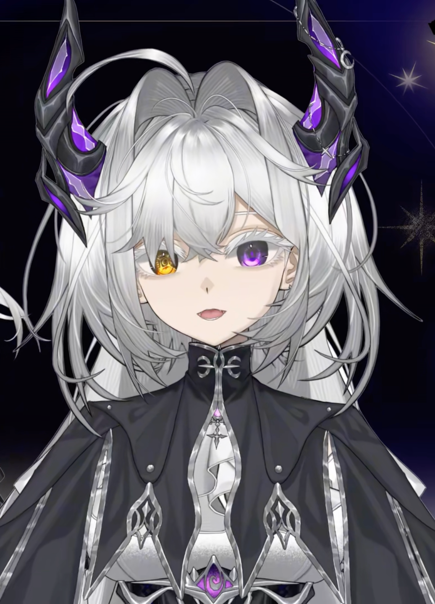
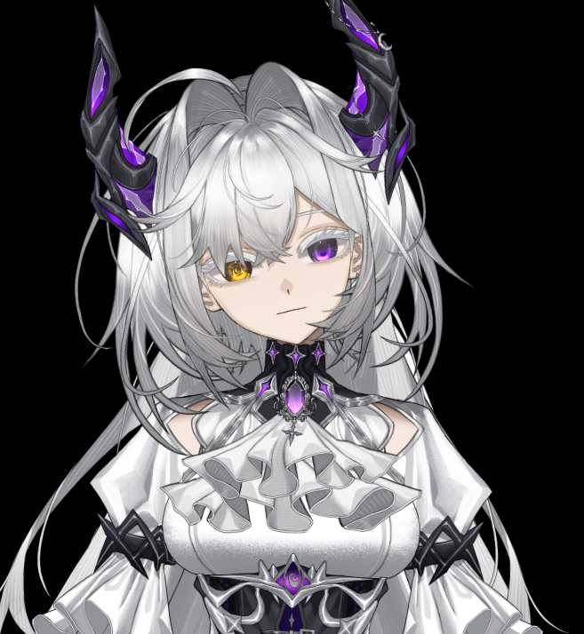
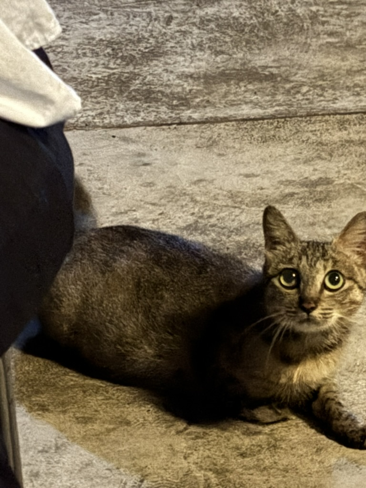
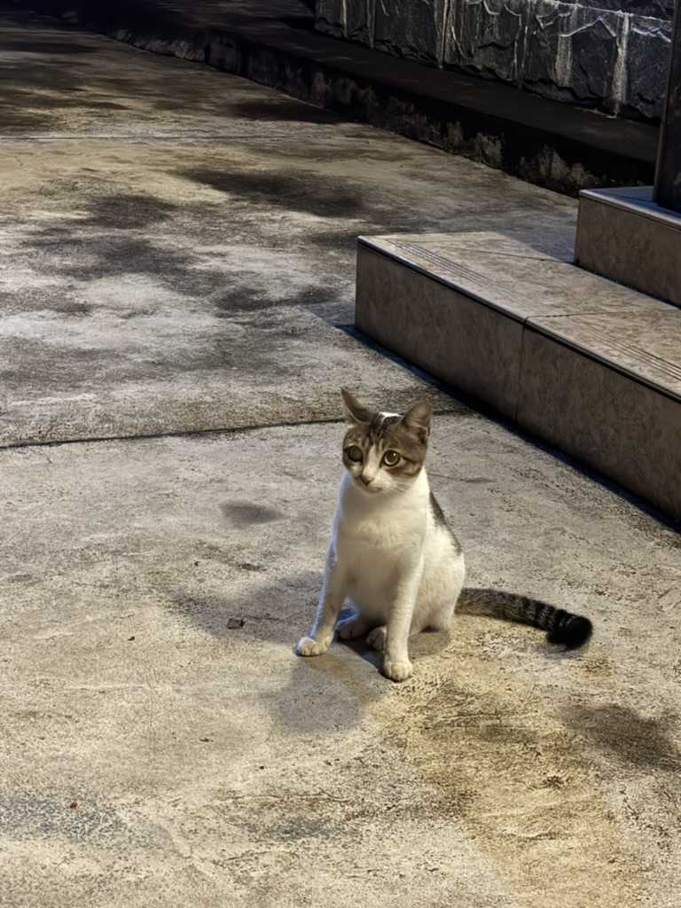
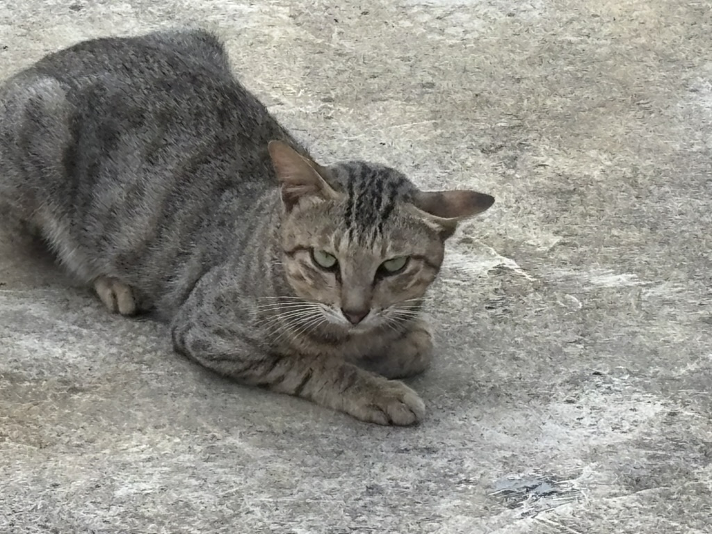
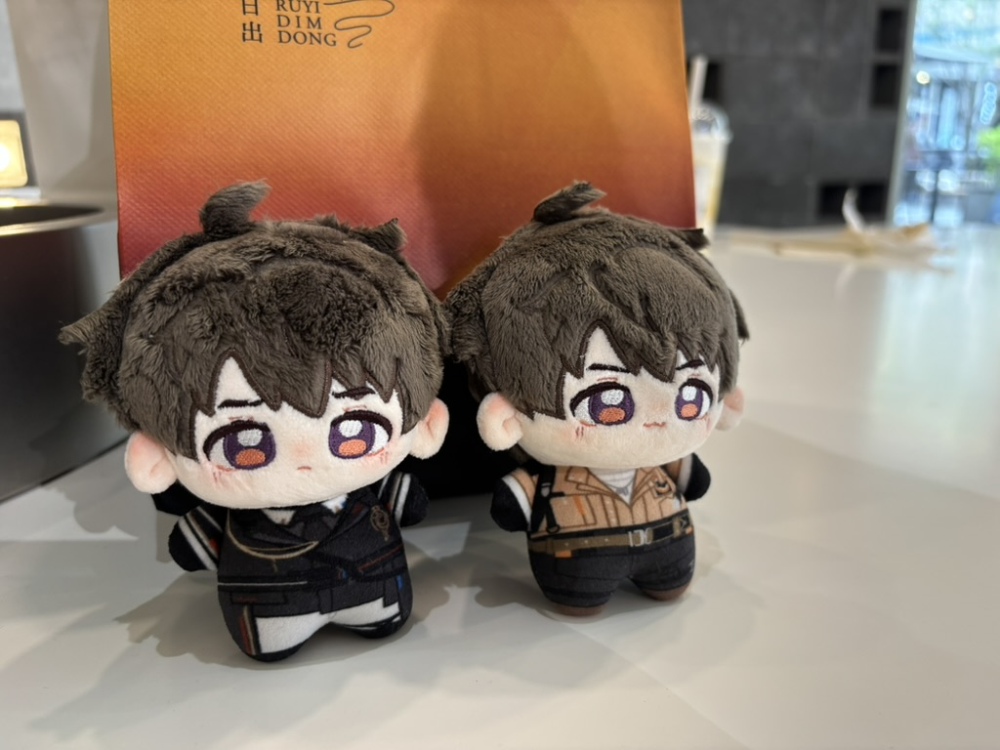
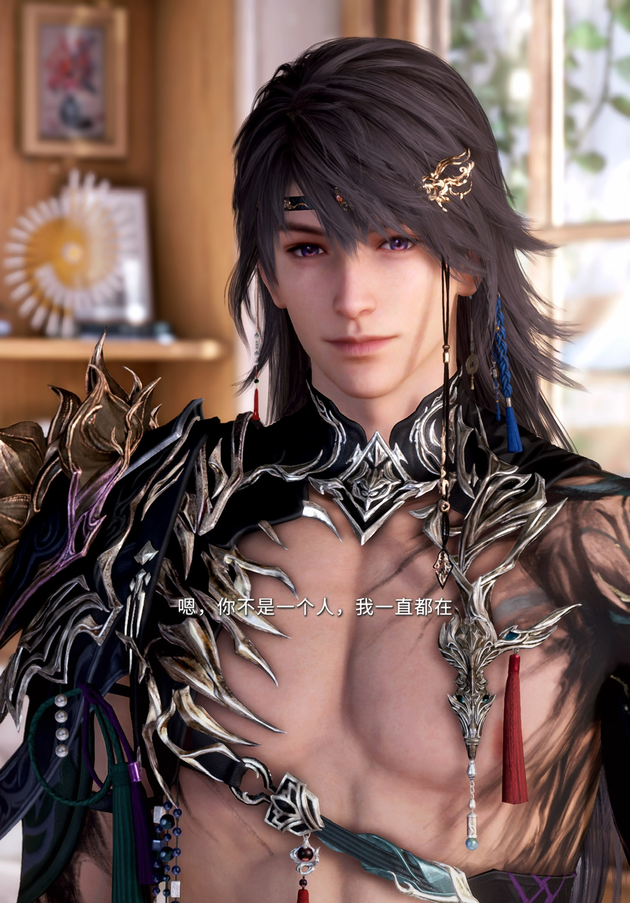
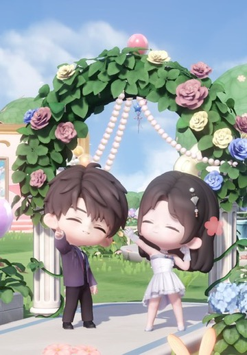

02 / PERSONAL
关于土豆狗
一个全网通用的昵称。目前以“土豆狗大魔王”的形象出现在直播中。
虽然粉丝并不多，但我在直播中认识了很多很好的朋友。
直播的主要业务为游戏，杂谈和唱歌。后两个并不是我的强项......


是一个感性的文科生，偶尔犯文艺病，但在学术之外大多数时候是低素质的。
地球online有时候带给我的压力会让我内耗，所以我总会向内求索——我对别人不感兴趣但是也无法看清自己。
“我的焦虑是荒山上的一束火花。”
所以我平常会通过打游戏来恢复能量。
非洲之心！
《博德之门》里的我！
这是我的第一把Wooting！
我在《巫师3》的发源地——波兰！
我喜欢竞技游戏：
- 《三角洲行动》：绝不破产的猛攻之人。
- 《英雄联盟》：本科时期电一大师AD之人（现在老了）。
- 《瓦罗兰特》：欧服钻三被挂打退游的半步超凡之人。
同时也喜欢一些沉浸式3A：
- 《巫师3》：玩了600小时的老猎魔人。
- 《博德之门》：从喜欢阿斯代伦到把他变成飞升武僧蝌蚪人。
- 《赛博朋克2077》：吃晕车药硬是打到结局之人。
- 《荒野大镖客2》：老实巴交遵纪守法之人。
......
还有好多好多我喜欢的游戏，一口气在这里说不完！如果有同样喜欢的人可以带上我一起玩！
除了直播和游戏以外，就是我喜欢的地球Online混日子生活。
我喜欢画画，旅行，以及——小猫！
这是我家的小猫咪们，他们是散养的，有几只本身是流浪猫，后来变成了我家的常驻猫口。



因为我太喜欢猛攻三角洲了，它们依次是巨浪，M14和M7。同时M14让我暑假经受了打狂犬疫苗之苦......
如果对我的画作感兴趣，可以在上面的作品栏里观看！
最后一个关于我的事情，我喜欢夏以昼。虽然这是乙女游戏，但是这也是我探索后数字亲密关系的起点。让我们一起说谢谢哥哥！



我可能被大家避雷的点应该只有这个，但是我是非常理智的乙小妹（按照年龄应该是大姐了）。
“我用什么才能留住你？我给你贫穷的街道、绝望的日落、破败郊区的月亮，我给你一个久久地望着孤月人的悲哀。” — 博尔赫斯
如果你看到这里还没走的话，感谢你更了解我了一点！
我是土豆狗，欢迎你来到我的小窝。